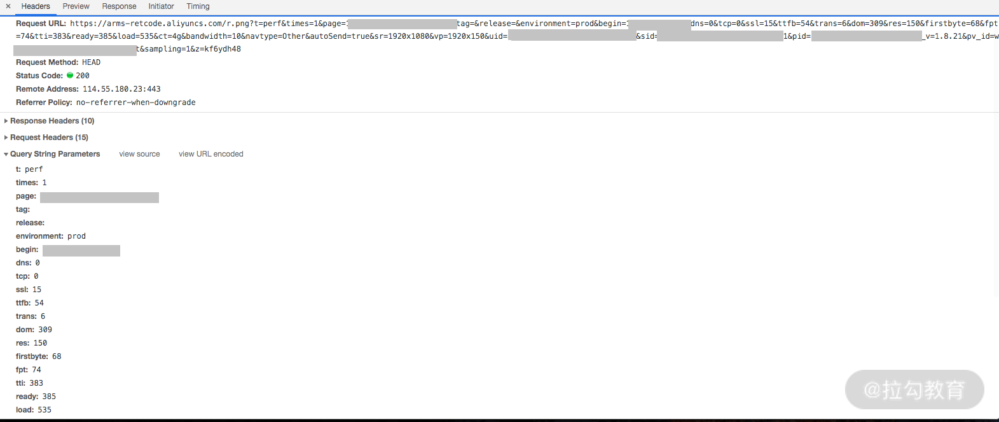
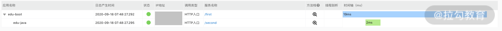
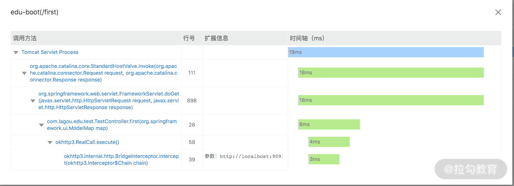
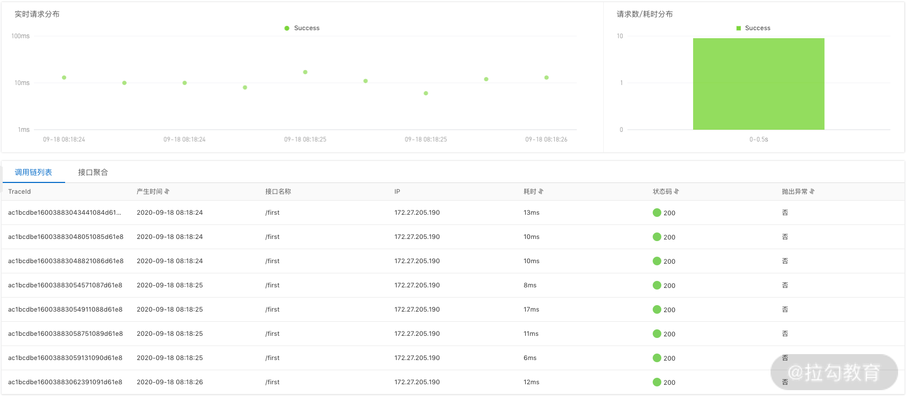
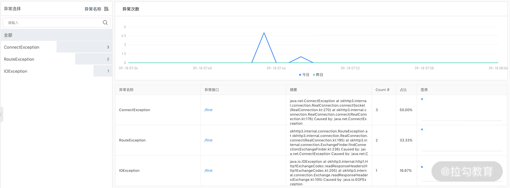
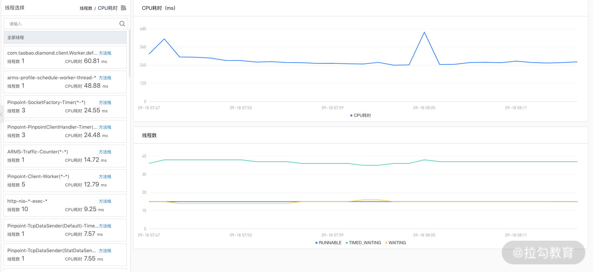

- 00 分布式链路追踪实战.md.html
- 01 数据观测：数据追踪的基石从哪里来？.md.html
- 02 系统日志：何以成为保障稳定性的关键？.md.html
- 03 日志编写：怎样才能编写“可观测”的系统日志？.md.html
- 04 统计指标：“五个九”对系统稳定的真正意义.md.html
- 05 监控指标：如何通过分析数据快速定位系统隐患？（上）.md.html
- 06 监控指标：如何通过分析数据快速定位系统隐患？（下）.md.html
- 07 指标编写：如何编写出更加了解系统的指标？.md.html
- 08 链路监控：为什么对于系统而言必不可少？.md.html
- 09 性能剖析：如何补足分布式追踪短板？.md.html
- 10 链路分析：除了观测链路，还能做什么？.md.html
- 11 黑白盒监控：系统功能与结构稳定的根基.md.html
- 12 系统告警：快速感知业务隐藏问题.md.html
- 13 告警质量：如何更好地创建告警规则和质量？.md.html
- 14 告警处理：怎样才能更好地解决问题？.md.html
- 15 日志收集：ELK 如何更高效地收集日志？.md.html
- 16 指标体系：Prometheus 如何更完美地显示指标体系？.md.html
- 17 链路追踪：Zipkin 如何进行分布式追踪？.md.html
- 18 观测分析：SkyWalking 如何把观测和分析结合起来？.md.html
- 19 云端观测：ARMS 如何进行云观测？.md.html
- 20 运维集成：内部的 OSS 系统如何与观测相结合？.md.html
- 21 结束语 未来的监控是什么样子？.md.html
19 云端观测：ARMS 如何进行云观测？
上一节，我带你了解了链路追踪中的关键功能，链路分析，以及它在 Skywalking 中的原理和实践。在这一节，我将带你了解云观测。
功能
随着用户流量、业务系统的复杂化，单一的服务器已经无法再满足我们的业务需求。机器数量越来越多，传统的自建服务器很难做到良好的维护，从而便衍生出了云服务器的概念。
云服务器利用云服务商提供的云主机替代了原先公司自建的主机，减少了公司购买主机、维护主机的成本。同时，云服务商还可以利用自己的研发能力，提供一套属于自己的基础组件，简化运维人员在运维基础组件时的成本、研发也无需再关心技术选型，只需要使用这个组件，让研发真正做到了只关心业务。
基于这些原因，目前已经有很多公司把自己的服务搬到云上运行。
但是随之而来有一个问题，如何在云上进行监控呢？现在很多云厂商对应自己的组件，都有一套自己的可观测方案，无论是哪一种方案，都能起到端到端观测、全栈性能监控、方案统一、统一观测这 4 个作用。
- 端到端观测：帮助你实现从 App、Web 页面、H5 端到后端服务器端的全流程、全链路的监控。因为服务是在云上运行的，所以云服务商可以将基础数据一并整合，帮你做到全方位地了解。
- 全栈性能监控：因为云上会有各种各样的公司，会接入各种各样的语言，那么它必然会考虑到不同的应用场景。此时，云观测系统则会适配不同的语言对全栈的应用都提供性能监控。
- 方案统一：由于云厂商一般都会提供一整套完整的组件库，比如阿里云的文件存储系统、消息队列等服务；也包含像视频点播、对象存储等对应特定场景的解决方案。通过云厂商提供的云观测，可以无缝地和其他系统对接，让你能快速了解每个组件和方案内部的细节。
- 统一观测：由于业务系统和组件都部署在云端，我们可以将可观测性中的每一个部分都接入云服务，包括日志、统计指标和链路追踪，依靠云服务来进行整合，通过云服务整合的方式，你无需再事无巨细地关心每一类数据是怎样上报，怎样整合的。
ARMS
阿里云提供的 ARMS 就是包含上述功能的一套云观测系统，除了以上 4 点，它还提供了很多特有的功能，让你更方便地观测数据。
提供功能
ARMS 提供的功能主要分为 6 个部分：前端监控、App 监控、应用监控、自定义监控、大盘展示、报警。我们依次来看。

前端监控 前端监控指的是通过在页面中埋入脚本的形式，让阿里云接管前端的数据上报。其中就包含我们比较常见的脚本错误次数、接口请求次数、PV、UV 等统计数据，也包含页面中脚本错误、API 访问等数据信息。通过统计数据你能快速了解前端用户的访问情况；脚本错误、API 访问等数据，则可以帮助你了解页面出现错误或者接口访问时的详细信息。
App 监控 App 监控的接入方式与前端监控方式类似，都是通过增加相关 SDK 的方式添加监控。其中主要包含崩溃、性能分析和远程日志获取。
- 崩溃指标和日志可以帮助移动端研发人员了解相关崩溃率，可以及时掌握崩溃时的堆栈信息，用于快速定位问题。
- 性能分析可以帮助研发人员了解页面中的统计指标，比如卡顿率、启动时间，从而得知当前 App 的性能处在什么水平。
- 远程日志则可以收集存储在每个用户手机中的 App 操作日志。研发人员能够根据这部分日志分析复杂场景下用户使用的问题，并深入到具体的用户维度查看问题。
应用监控 ARMS 的应用监控和我之前讲的链路追踪的内容十分相似，其中就包含链路数据查询，与业务系统的日志结合，统计指标、拓扑图等信息。阿里云的应用监控还提供了根据参数查询链路的功能，可以在链路中增加业务属性，让你在查询问题链路时更加个性化。
将链路追踪放到云平台的有一个好处，那就是它可以和内部系统做完整的集成，比如结合阿里云提供的全生态组件，查看相互之间的全链路。
自定义监控 自定义监控提供多种场景的数据内容的自定义解析、数据清洗、聚合、保存到统计指标中，进行监控告警。
一般数据源都是通过日志的方式输入，我们可以根据日志中统一的规定，比如限定具体用户 ID 字段的解析位置，去计算异常次数、访问次数等数据。这样的方式可以方便你进行业务层的数据分析，与业务结合起来可以让你不再局限于技术层面去思考问题。
大盘展示 根据指标数据内容定制显示大盘数据。通过定制化的方式，你可以将系统中已有的统计指标内容，通过定制化的图表展示。
你可以能够通过页面的方式，快速了解关心的业务的实时情况。阿里巴巴“双十一”时的交易额页面上会显示实时的交易额，也会显示一些国内外的主要指标数据，这个就是大盘展示最典型的应用场景。
报警 与我在“模块二”中讲到的创建规则与告警十分相似。阿里云 ARMS 所提供的告警功能，会提供一个界面，让你十分方便地通过这个界面去集成各个端中的数据和所有统计指标。同时，它也支持短信、钉钉、邮件等通知方式。
端到端监控 下面，我们依次来看一下如何在 ARMS 上实践上面说到的前端监控、APP 监控和应用监控。
前端监控 如上文所说，前端监控是通过在代码中增加脚本的方式来实现数据监控的。代码如下：
!(function(c,b,d,a){c[a]||(c[a]={});c[a].config={pid:"xx",AppType:"web",imgUrl:"https://arms-retcode.aliyuncs.com/r.png?",sendResource:true,enableLinkTrace:true,behavior:true};
with(b)with(body)with(insertBefore(createElement("script"),firstChild))setAttribute("crossorigin","",src=d)
})(window,document,"https://retcode.alicdn.com/retcode/bl.js","__bl");
在页面中，通过 script 标签引入一个 JavaScript 文件来进行任务处理，然后通过 pid 参数设定的应用 ID，保证数据只会上传到你的服务中。
网页运行时就会自动下载 bl.js 文件，下载完成后，代码会自动执行。当页面处理各种事件时，会通过异步的形式，上报当前的事件信息，从而实现对前端运行环境、执行情况的监控。常见的事件有：页面启动加载、页面加载完成、用户操作行为、页面执行时出现错误、离开页面。
页面加载完成之后，会发送 HEAD 请求来上报数据。其中我们可以清楚的看到，在请求参数中包含 DNS、TCP、SSL、DOM、LOAD 等信息，分别代表 DNS 寻找、TCP 建立连接、SSL 握手这类，我在“05 | 监控指标：如何通过分析数据快速定位系统隐患？（上）”中讲到的通用指标，也包含 DOM 元素加载时间这类网页中的统计指标信息。如下所示：

数据上报后，ARMS 就会接收到相对应事件中的完整数据信息，从而通过聚合的方式，存储和展示数据。在 ARMS 中，针对应用有访问速度、JS 错误、API 请求这些统计指标和错误信息的数据，ARMS 可以依据不同维度的数据了解到更详细的内容，包含页面、地理、终端、网络这 4 类。通过不同的数据维度，你也可以更有针对性地了解问题。
App 监控 App 的监控方式与前端监控十分类似，都需要通过增加代码的方式进行。以 iOS 为例，如果我们想要接入性能分析功能，除了要引入相关依赖，还需要在代码中进行如下的声明：
[[AlicloudAPMProvider alloc] autoInitWithAppVersion:AppVersion channel:channel nick:nick];
[AlicloudHAProvider start];
这段代码会创建 AlicloudAPMProvider 对象，并且传入相关的参数，然后通过 start 方法启动监控功能。
应用监控 对于服务端监控来说，ARMS 支持目前主流的 Java、PHP、Go 等语言，这里我以 Java 语言为例说明。
在 Java 中，主要通过字节码增强的形式采集数据。项目启动后，会采集机器中 JVM 中的统计指标、链路数据等信息，然后结合链路，分析出统计指标、拓扑图的信息，以及应用与各个组件之间的交互细节，比如数据库查询、消息 MQ 发送量等数据信息。
在服务端监控中，我们可以看到请求链路中的数据，在 ARMS 的显示中都是基于应用的维度，以树形进行展示的。比如我们有 2 个应用程序，上游服务通过“/first”接口地址对外提供服务，同时又调用了下游服务的“/second”接口。如下图所示：

这张图中展示了对应的上下游服务、发生时间、实例地址、调用方式、服务名称和时间轴信息。并且我们可以通过点击其中单个服务的“方法栈”按钮，查看其链路中关键方法的执行流程。点开之后的页面如下：

在 ARMS 中服务端监控的功能中，最常用的是应用诊断部分，其中包含了实时诊断、异常分析、线程分析这 3 部分重点功能。
- 实时诊断：默认情况下，服务端监控会通过采样的形式采集链路数据，以此来保证尽可能地减少对线上服务造成性能损耗。大多数情况下，指标数据都能快速体现出运行情况。在实时诊断中，会临时采取 100%采集，将所有的请求链路进行采集并上报，此时则可以看到指定时间段内的所有链路信息。

- 异常分析：汇总当前应用下存在的各种异常信息，你可以了解你的应用中哪些异常信息是相对较多的。有限优化占比较多的错误信息，有利于提升服务整体的成功率。
下图中汇总了服务中出现错误的异常信息，我们可以通过点击具体的接口名称，找到对应的接口，更细致地查看接口细则。

- 线程分析：列出当前应用实例中具体的线程或者线程池列表。我们可以根据线程数或者 CPU 耗时信息来对线程进行排序，更直观地看出哪个线程池中创建的线程比较多，或者具体哪个线程消耗 CPU 资源较多。
如果程序出现执行缓慢的情况，我们可以通过 CPU 资源消耗来寻找原因。还可以通过点击每个线程中右侧的方法栈，来快速查看指定线程的执行方法栈信息。查询到问题的原因后，我们再结合具体的业务场景处理问题。

总结
以上，我介绍了云端观测的作用以及在阿里云的 ARMS 系统中的实践。如果你的系统部署在云端，那么云端观测就是你进行系统观测的不二选择。你通过云端观测解决过哪些问题呢？欢迎你在留言区分享。
下一节，我将带你了解如何将可观测系统与 OSS 系统相结合。